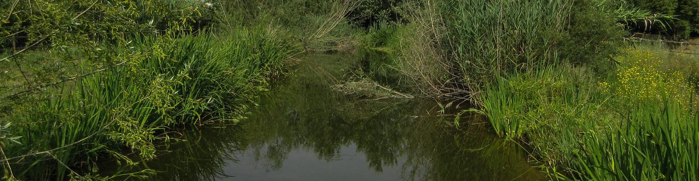

Ruta · Girona
Aquest itinerari us permetrà descobrir la importància que van tenir la indústria i les hortes de l’antic poble de Santa Eugènia de Ter , avui convertit en un dels barris més populars de la ciutat…